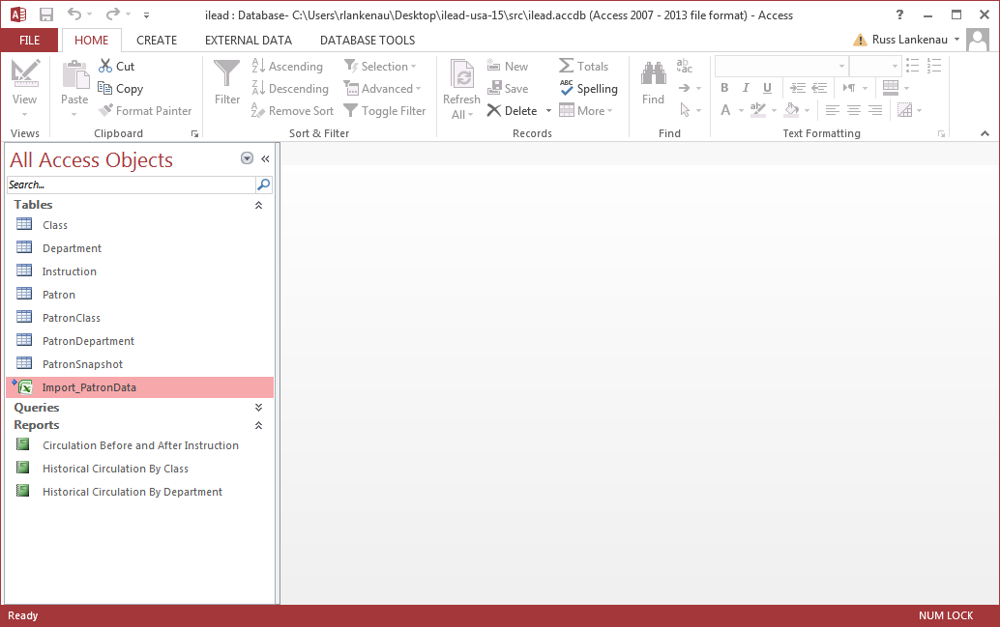
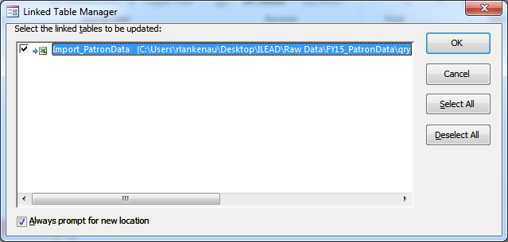
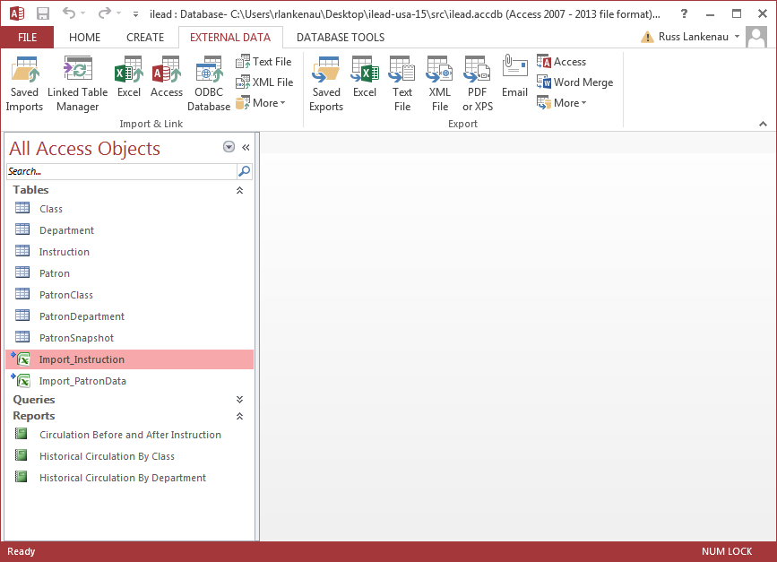
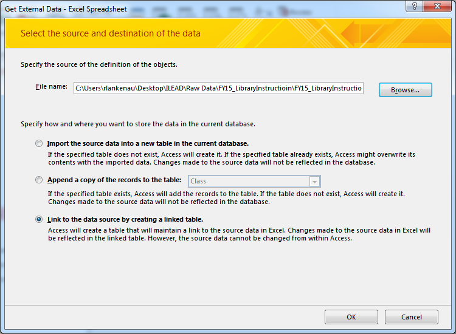

Importing data from other databases
A large amount of the data we're interested in analyzing is stored in databases other than the Access database we run our queries from. To simplify the process of importing snapshots of that data into our Access database, we have a few import programs written in Python. Each program is responsible for importing data from a single table, although that data may result in multiple records being created in different tables in our database.
Importing New Data
The existing process for importing data involves generating an exported version of the table in Excel format, and then importing that data into the Access database. To make the software easier to write and maintain, the Excel files are set up as linked tables in the Access database.

To import a new spreadsheet, simple open up the Access database, right-click on the linked table, and select "Linked Table Manager" from the pop-up menu.

Make sure the table you want to update has a check mark next to it, and that the "Always prompt for new location" checkbox at the bottom of the screen is ticked. When you click "Ok", a dialog box will pop up asking you for the location of the new file.
Once you've updated all of the linked tables, save your Access database, and you're ready to run the import software.
If you always generate your database exports with the same name, and put them in the same location, you can skip this step. Access will pick up any changes automatically.
Adding your own linked tables
To add your own linked tables, click on the "External Data" tab at the top of the Access window.

You can select different data sources, including other Access databases, Excel files, or plain-text formats like CSV. Once you click on the appropriate format, select "Link to the data source by creating a linked table", and follow the rest of the wizard to set up your table.

Importing Patron Data
The Patron data exports include fields that are stored in several different tables in our database design. There's the Patron table itself, with the patron's ID number, their barcode, and their group and status. There's also information about the department they belong to. Since the department information can change over time, we also need to update the table linking patron and department.
The import software handles all of this for you, but you need to be aware of a few things.
Firstly, the departments present at an institution are automatically detected during the process of importing patrons. This means if there are any misspelled departments, a duplicate department entry with a misspelled name will be generated. This kind of thing can be hard to detect, but it may show up in reports, so if you see something that looks strange in a report, that's a possible reason. If the PAT_DEPARTMENT field in the source table is used for notes (as we've seen at some institutions) that can generate erroneous departments as well.
Secondly, because we're tracking department membership over time by using changes between snapshots, the order in which snapshots are imported does matter (in computer science, we say that the import operation is "not idempotent"), so make sure you're importing snapshots in the order they were generated. Multiple records for a single patron in a single snapshot can also cause erroneous department changes to show up.
Lastly, you can run the import software with the database open in Access, but you need to make sure none of the tables have unsaved changes, and that none of them are open in design view. In both of these cases, the import software will generate an error message. If this happens, just save any changes, close any tabs open to design view, and re-run the software.
Importing Instruction Data
Since the Instruction table simply indicates the date on which a patron received instruction, it will accept duplicate data. Running the same import step will result in duplicate data being inserted.
Importing Patron Snapshots
Patron snapshots can be inserted a maximum of once a day. The ingest software will automatically detect duplicates, so it is safe to run the same import several times. The order of the imports does not matter, since the instruction date is included in the source data.